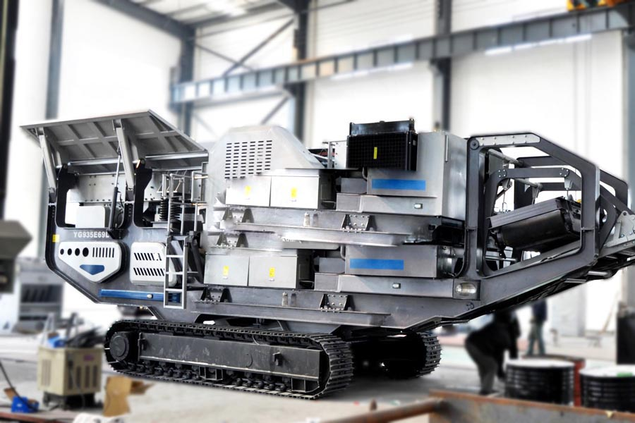
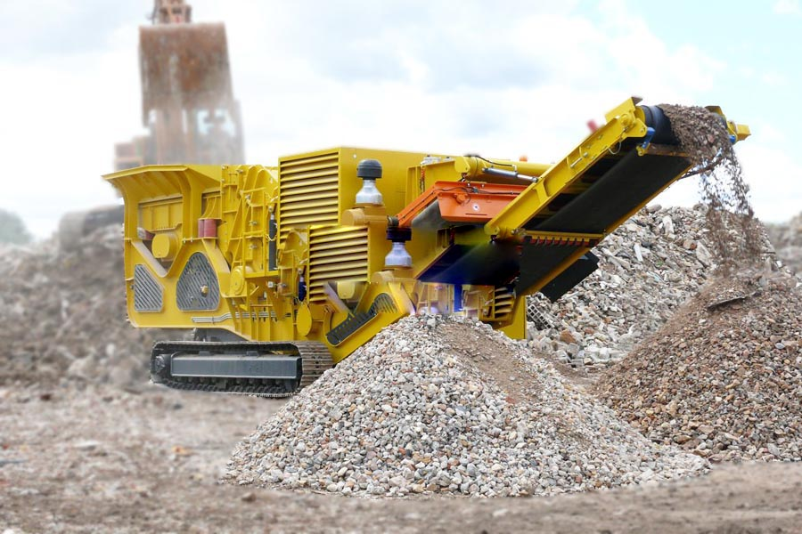

- Home >
- stone crusher >
- crawler mobile screening station

Construction waste crushing production line

Mobile construction waste crushing station for urban construction waste crushing.
crawler mobile screening station
Mobile crushing and screening station Introduction
The company produced LDSF series tracked mobile screening station with a light weight, small size, easy to transport, crawler, no damage to the road, the optional accessories and more, can be a wide range of applications and so on. Crawler screening station machine uses hydraulic all-wheel drive, ideal for narrow space, urban demolition and other complex terrain operations.
LDSF series crawler mobile screening station can be configured to two, three screening equipment, hopper panels can be folded, driven by a diesel engine of green, energy efficient. Screening equipment can be customized according to customer requirements.

Mobile crushing and screening station structures
YA series vibrating screen is a mobile screening station professionally designed, intermediate screening machine support, beams, feeding me, and so can be replaced individually. YA screening machine under conditions of high intensity work can mesh screening machine is kept clean, maintain accurate sizing at high speed.
Mobile crushing and screening station Features
1. Based on YA series is designed for efficient mobile screening station shaker;
2. Ease of repair and replacement of missing modular design;
3. Easy maintenance Modular exciter effectively;
4. The choice of double or triple shaker;
Mobile crushing and screening station technical parameters
| Name | Specification | Unit | Quantity | Power（kw） |
| Raw materials warehouse | LDYDS | Unit | 1 | 0 |
| Feeder belt | B1000=13.8m | Unit | 1 | 15 |
| Vibratory screen | 3YA1854 | Unit | 1 | 22 |
| Ship steel | LDYDS | Unit | 1 | 0 |
| Track assembly | LDYDS-40T | Unit | 1 | 0 |
| Generator sets | 90GF-C-D | Unit | 1 | 0 |
| Hydraulic assembly | LDYDS | Unit | 1 | 55 |
| Assy | LDYDS | Unit | 1 | 0 |
| Wired remote control | LDYDS | Unit | 1 | 0 |
| Steel structure | LDYDS | Batch | 1 | 0 |
| Belt conveyors (discharge) | B800=6.5m | Unit | 1 | 5.5 |
| Belt conveyors (discharge) | B650=6.5m | Unit | 1 | 5.5 |
| Belt conveyors (discharge) | B650=6.5m | Unit | 1 | 5.5 |
| Belt conveyors (discharge) | B650=6.5m | Unit | 1 | 5.5 |
| Hydraulic legs | YDS50 | Unit | 1 | 0 |
| Wireless remote control | YDS50 | Unit | 1 | 0 |

Mobile crushing and screening station works
After crushing the need for accurate classification of different finished products when the Italian mining machine LDSF series mobile screening station can provide the best screening work, exactly match customer needs. And LDYZ, LDEP, LDFJ and other crawler mobile crushing station the same, crawler mobile screening station brings together the Italian long-term experience and expertise in terms of crushing and screening.
Crawler mobile core equipment room screening station Italian mine machine YA series vibratory screening machine, which is designed in a wide range of applications in a modular and robust unusual performance. YA series vibrating screen is designed for crawler mobile screening station. Italian mining machine YA vibratory screening machine consists of modular components assembled rivet is made, thus reducing any risk of failure due to fatigue caused by stress.
Leave Me A Message, Now
If you have any questions regarding equipment prices, production line configuration or other problems, you can send a message to us, we will contact you soon.